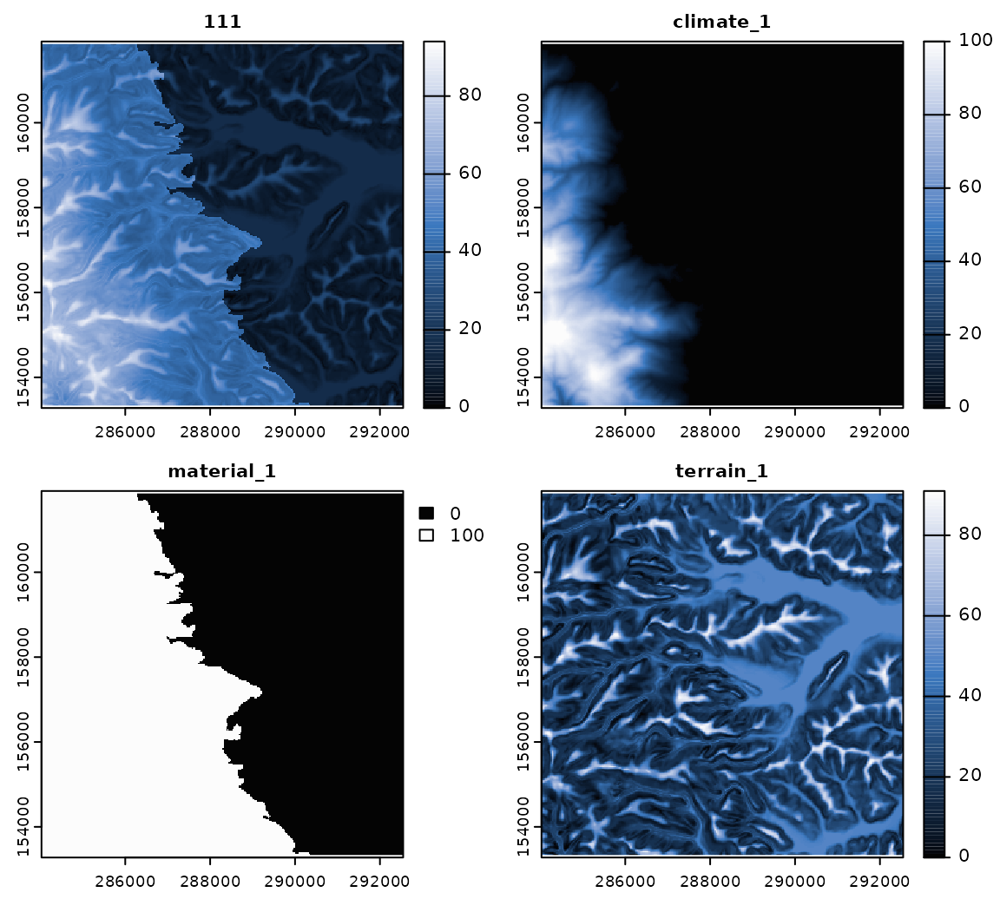

vignettes/similarity.Rmd
similarity.RmdGet the data required for this vignette
# Compressed folder with files from rassta’s installation folder
wasoil <- system.file("exdat/wasoil.zip", package = "rassta")
# Directory for temporary files
o <- tempdir()
# Copy compressed folder to directory for temporary files
file.copy(from = wasoil, to = o)
#> [1] TRUE
# Extract files to subfolder
d <- paste(o, "/rassta", sep = "")
unzip(paste(o, "/wasoil.zip", sep = ""), exdir = d)The landscape similarity is a relative measurement of the correspondence between any XY location in geographic space and the landscape configuration represented by a given stratification unit. The spatial signature represents a second-level landscape correspondence metric, and it is calculated through the pixel-wise aggregation of the spatial signatures associated with a stratification unit. Each stratification unit has a set of associated spatial signatures because the stratification units are the result of the spatial intersection of multiple classification units, which in turn have a corresponding spatial signature.
The code below demonstrates the calculation of landscape similarity layers for the stratification units using similarity(). The function similarity() requires a single-layer SpatRaster object representing stratification units, and a multi-layer SpatRaster object with the spatial signatures of classification units from multiple landscape factors.
# Load rassta and terra packages
library(rassta)
library(terra)
# Multi-layer SpatRaster with spatial signatures of classification units
clim.sig <- rast(list.files(d, pattern = "climate_", full.names = TRUE)) # For climatic units
mat.sig <- rast(list.files(d, pattern = "material_", full.names = TRUE)) # For material units
terr.sig <- rast(list.files(d, pattern = "terrain_", full.names = TRUE)) # For terrain units
# Single-layer SpatRaster of stratification units
su <- rast(paste(d, "/su.tif", sep = ""))
# Landscape similarity to stratification units
su.ls <- similarity(su.rast = su, sig.rast = c(clim.sig, mat.sig, terr.sig),
su.code = list(climate = c(1, 1),
material = c(2, 2),
terrain = c(3, 3)
)
)
# Plot landscape similarity to stratification unit '111' and its spatial signatures
plot(c(su.ls$landsim[[1]], clim.sig[[1]], mat.sig[[1]], terr.sig[[1]]),
col = hcl.colors(100, "Oslo", rev = TRUE), nc = 2, mar = c(1.5, 1.5, 1.5, 3.5)
)
An important argument of similarity() is su_code. This (nested) list should indicate the names of the landscape factors/factor scales used to create the stratification units, and the position (start, end) of their corresponding classification units’ ID in the numeric code. The code below provides comments to aid in understanding the argument su_code.
# Consider the following nested list:
su.code <- list(climate = c(1, 1), material = c(2, 2), terrain = c(3, 3))
# The stratification units are composed of classification units from three landscape factors
names(su.code)
#> [1] "climate" "material" "terrain"
# For climate, the classification units are represented by the first digit in the numeric code
su.code$climate
#> [1] 1 1
# For material, the classification units are represented by the second digit in the numeric code
su.code$material
#> [1] 2 2
# For terrain, the classification units are represented by the third digit in the numeric code
su.code$terrain
#> [1] 3 3
# Thus, the numeric code of the stratification units 111 and 468 means:
su <- c(111, 468)
su[1] # 'climate' = 1, 'material' = 1, and 'terrain' = 1
#> [1] 111
su[2] # 'climate' = 4, 'material' = 6, and 'terrain' = 8
#> [1] 468Clean files from temporary directory